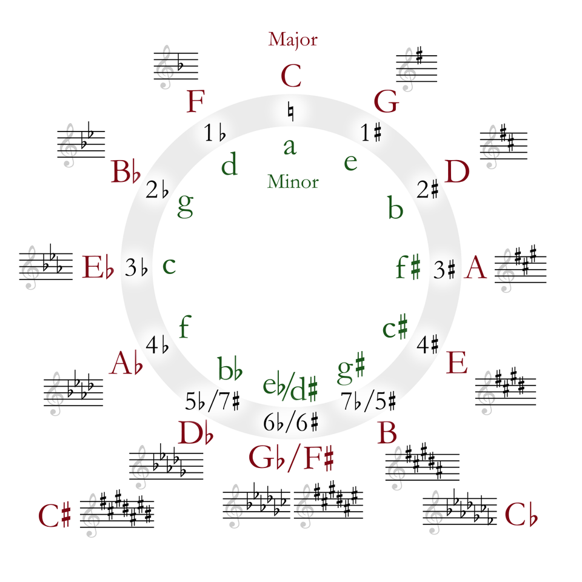

Tritone, 三全音代理或降二代五和弦
复习时间
II->V->I
五级和弦（特别是属七和弦）有强烈的趋势接到一级和弦，最常见的C大调progression:
Dm -> G7 -> C
从和弦级数上来说就是II -> V -> I.
因此从功能和声的角度来说，V是I的Dominant Chord(属和弦)
Why
因为属和弦有非常不稳定的组合。
Take G7 chord for an example. It is composed of:
G, B, D, F
and between B and F is 6 halftone, that is 3 whole tone, and it sounds so discordant – which makes us have a strong motivation to solve it to Tonic Chord.
Here we get the name: Tritone (that is 3 whole tone).
用法
副属和弦 (Secondery Dominant Chord)
In my understanding, the so-called Secondary Dominant Chord is the dominant chord of any chord. 我们把要到的和弦当作一级和弦，那它上面的五级和弦就是它的副属和弦。
For example, next progression:
C -> E7 -> Am
E is the 5th note of A, so E7 is the dominant 7th chord of Am. 注意这里E7并不是C大调的和弦，也就是说，我们通过使用属和弦使用了一个离调的和弦。
副属和弦之递归：We can still add a chord between C and E7, that is B7 (B is the 5th note of E):
C -> B7 -> E7 -> Am
and this trick goes on and on… Yes! it reminds us of Circle of 5th(五度圏):

三全音代理（Tritone Substitution）
因为我们已经提炼出来Dominant 7th chord的tension来自于它的三全音，我们完全可以保留这个三全音，然后使用其他的和弦。例如G7和弦:
G B D F
我们保留它三全音的结构B F, 使用另外的和弦，比如Db7和弦：
Db F Ab Cb(B)
因此我们可以使用Db7 去替代 G7，也就是说Db7 也会有强烈的解决到 C的动机。
一个规律是三全音代理的和弦是目标和弦的高半音的Dominant 7th, 所以我们可以很快找到这样的一些选择：
Dm7 -> G7 -> CMaj7
我们可以在每一个和弦的前面接上它的三全音代理：
(Eb7) -> Dm7 -> (Ab7) -> G7 -> (Db7) -> CMaj7
这个trick也被称为替代属和弦，或者降二代五（降二即高半音，代五指替代属和弦）。